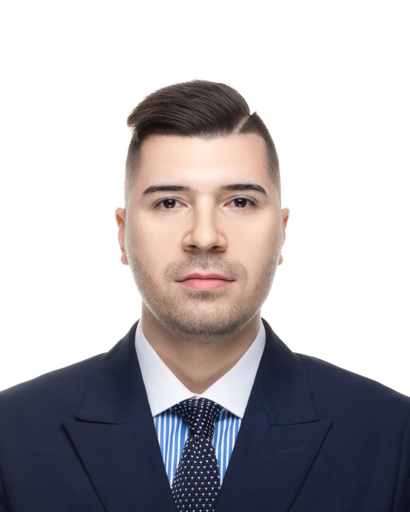
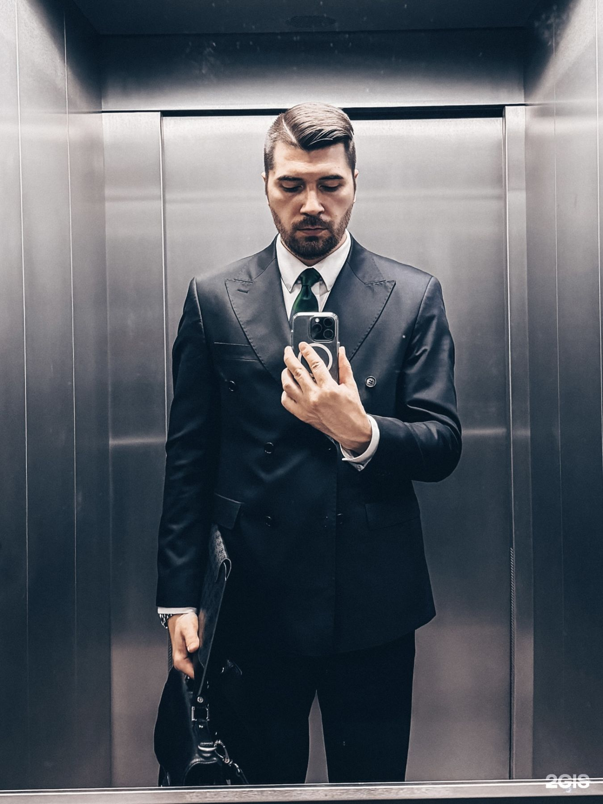
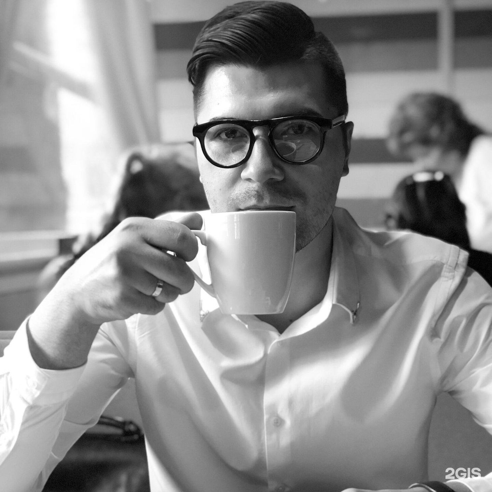

Без адвокаталучше молчать.
Защищаю по уголовным, семейным и гражданским делам, веду наследство и банкротство физических лиц. Уфа, Башкортостан и вся Россия.
На связи круглосуточно. Консультация — по предварительной записи: лично, онлайн или с выездом.

Что делать прямо сейчас
Выберите ситуацию — покажу первые шаги, которые важно сделать до встречи с адвокатом. Это общая памятка, а не консультация по вашему делу.
Чем занимаюсь
Беру дела по пяти направлениям. На консультации разберём, есть ли у вас перспектива и какой будет линия защиты.
Уголовные дела
- Защита на стадии проверки и следствия
- Участие в допросах и следственных действиях
- Защита в суде, обжалование приговоров
- Переквалификация и прекращение дела
Семейные дела
- Развод и раздел имущества
- Алименты на детей
- Порядок общения с ребёнком
- Переговоры без суда, если это возможно
Гражданские дела
- Взыскание долгов, в том числе по распискам
- Ущерб после ДТП
- Споры с арендодателями и по ЖКХ
- Отмена судебных приказов, иски и жалобы
Наследство
- Оформление и принятие наследства
- Споры между наследниками
- Сбор документов и сопровождение у нотариуса
Банкротство физических лиц
- Оценка — подходит ли вам банкротство
- Сбор документов
- Представительство в арбитражном суде
Дела и результаты
Подробности дел — адвокатская тайна. Поэтому здесь только то, что доверители сами рассказали в отзывах в 2ГИС.
Бесплатный адвокат говорил подписать признание, но я вовремя опомнился и обратился к Михаилу. Дело закрылиfomaa91, 2021
Помог понизить на лёгкую статью, лучшего и желать нельзя былоДмитрий Андреев, 2024
Разбирательство продолжалось около 5 месяцев, каждое заседание в мою пользу, в итоге добились чего хотелиНикита Тимошенко, 2021
Всё прошло так, как он прогнозировал, и мы выиграли делоМаргарита Ястребова, 2021
В результате я получила свои деньги, которые мне долго не отдавал мой знакомый. Довёл дело прям до получения денегАнастасия, 2021
Всё прошло спокойно, без скандалов, у адвоката получилось подвести меня и бывшую супругу к компромиссуАртём Агалямов, 2025
Благодаря его усилиям мне удалось избавиться от долгов и начать новую жизньсалхан соловидов, 2024
Провёл все необходимые переговоры и подготовил жалобу, которая впоследствии привела к положительному исходу делаЮнусова Карина, 2025
Каждое дело индивидуально: прошлые результаты не гарантируют такой же исход в другом деле.


Об адвокате
«Работа адвоката — это не всегда только законы. Это ещё и творческий подход к каждому делу, на каждом этапе».
Михаил Владимирович Петров
При обращении ко мне прошу быть со мной предельно честными — так мы выработаем лучшую линию защиты по делу, с наиболее благоприятным исходом для вас.
Веду дела в основном в Уфе и Республике Башкортостан, а также на всей территории России.
Как начинается работа
Звонок или сообщение
Коротко опишите ситуацию по телефону, в WhatsApp или Telegram. На связи круглосуточно.
Консультация
По предварительной записи: в кабинете, онлайн или с выездом к вам. Разбираем документы и обстоятельства.
Позиция и план
Объясняю перспективы и риски простыми словами, предлагаю линию защиты, согласуем условия.
Ведение дела
Документы, переговоры, заседания. Держу в курсе на каждом этапе — это отмечают доверители.
Что говорят доверители
65 отзывов в 2ГИС
Частые вопросы
Сколько стоят услуги?
Стоимость зависит от категории и сложности дела, поэтому называю её после того, как разберусь в ситуации. Оплатить можно наличными или через банк.
Можно получить консультацию онлайн?
Да. Консультирую по телефону и онлайн, при необходимости приезжаю к вам. Очная встреча — по предварительной записи.
Что, если меня срочно вызывают к следователю?
Звоните сразу — на связи круглосуточно. Вы вправе не свидетельствовать против себя и близких родственников: это гарантирует статья 51 Конституции РФ.
Всё, что я расскажу, останется между нами?
Да. Сведения, которые вы сообщаете адвокату, составляют адвокатскую тайну — это закреплено в законе об адвокатской деятельности.
Ведёте дела за пределами Уфы?
Да. Основная практика — Уфа и Республика Башкортостан, но веду дела и в других регионах России.
Записаться на консультацию
адвокатская коллегия «Технологии защиты»